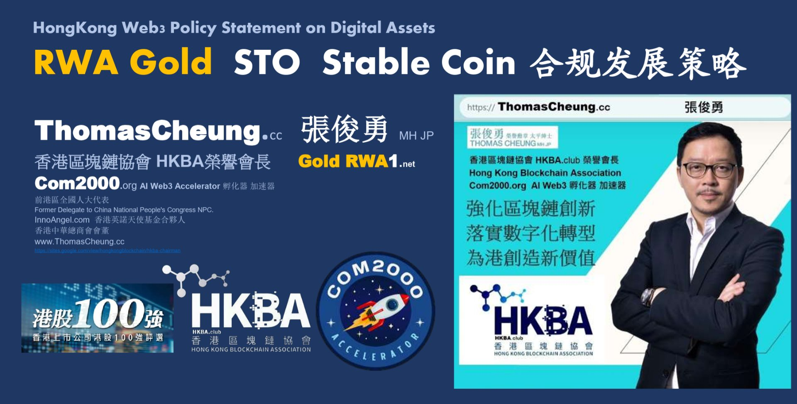
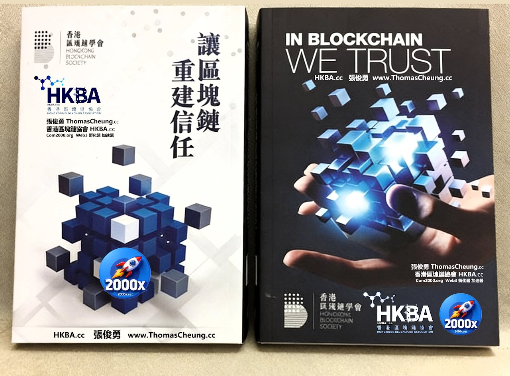
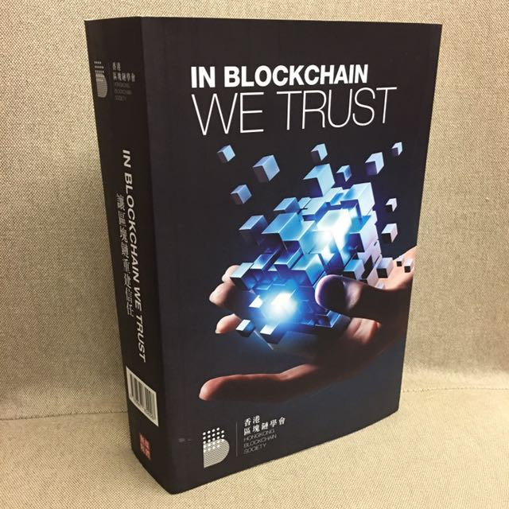
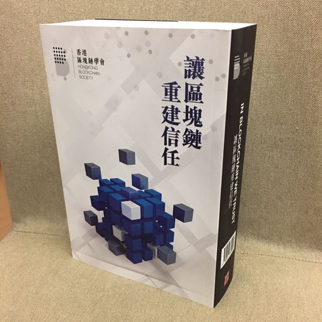
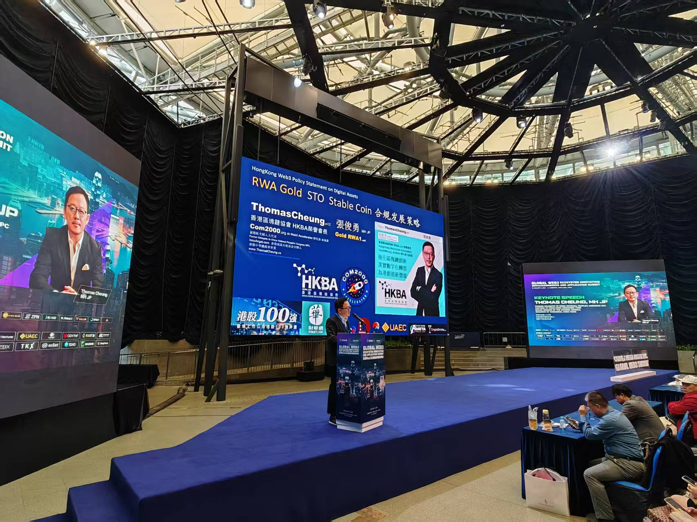

HKBA.club · HongKongBlockchain.org — 香港及大灣區領先的區塊鏈與 Web3 行業協會, 一個開放、自主、平等的去中心化組織 (DAO)。 The leading industry association for the Blockchain & Web3 community in Hong Kong and the Greater Bay Area.
By our Honorary Chairman 張俊勇 Thomas Cheung, MH JP — Former Delegate to the National People's Congress of China.



區塊鏈的基本特性: 去中心化 Decentralized、分佈式賬本 Distributed Ledger、不可篡改 Non-Repudiable、不可逆 Irreversible、安全加密 Secured Encrypted、去信任 Trustless、匿名 Anonymous。
本書由香港區塊鏈協會榮譽會長張俊勇 (Thomas Cheung, MH JP) 撰寫, 深入淺出地講解區塊鏈、數字資產、STO 與 RWA 的產業變革, 是理解 Web3 時代信任機制的必讀之作。
了解作者 More About the Author
香港區塊鏈協會 HKBA.club 是一個開放、自主、平等的去中心化組織 (Decentralized Organization DAO)。通過學習、交流及推廣區塊鏈技術及應用, HKBA 致力成為鏈接大中華及 Web3 元宇宙世界的銜接平臺, 並將香港打造成新時代的 AI Blockchain 金融科技中心。
HKBA is dedicated to be an open platform for members to engage with multiple stakeholders, and promote best practices in a collaborative, open, and transparent manner.
Promote blockchain literacy and build a strong talent pipeline for the Web3 ecosystem in Hong Kong and the Greater Bay Area, partnering with PolyU, HKUST, HKMU, CityU and more.
HKBA is a member of the ASEAN AI Blockchain Alliance (AABA.asia · ASEANBlock.org), connecting Hong Kong with ASEAN, Middle East, Africa and global Web3 communities.
HKBA was formed in 2017 by our Co-Founders Tony Tong 唐儀 (TonyTong.cc), Thomas Cheung 張俊勇 (Hong Kong Blockchain Society HKBCS 香港區塊鏈學會), Prof. Wei-Tek Tsai 蔡維德 (Beihang University Blockchain Lab) and Jay Liang (GSR Matrix Fund). Since then, HKBA has grown to become the leading industry association for the Blockchain and Web3 community in Hong Kong and the Greater Bay Area.
HKBA has partnered with Hong Kong Polytechnic University (PolyU), HKUST, Hong Kong Metropolitan University (HKMU), CityU, FuYao University, 1College.org (HKBA 元宇宙教育學院 — 開放的線上教育知識共用平臺), Hong Kong Financial Services Institute (香港金融管理學院 HKFSI) and International Technical University (ITU, Silicon Valley) to provide Blockchain, AI and Web3 Education.
HKBA works closely with Com2000.org — a leading AI Web3 Incubator & Accelerator based in USA and Hong Kong, supporting startups across RWA, STO, DePIN, AI and digital finance.
HKBA 是香港最國際化的本地區塊鏈協會, 亦是最本地化的國際商會。會員網絡包羅互聯網企業、區塊鏈金融、科技企業、金融證券企業、上市公司、跨國集團及眾多初創公司, 業務涵蓋 AI FinTech、Blockchain、Cloud Data Center、NFT、Metaverse、Cybersecurity 及 Legal 專業服務。
Join HKBA Membership Now! 香港區塊鏈協會 入會申請表 — 只需一個企業會籍, 貴公司的所有全職員工都可以全面享用本會的各項服務和優惠。
香港銅鑼灣登龍街 1-29 號金朝陽中心 2 期 19 樓 A
19A, Soundwill Plaza II Midtown, 1-29 Tang Lung St, Causeway Bay, Hong Kong
Email: info@HKBA.club · HongKongBlock@gmail.com
Telegram: @HKBAclub
X: X.com/HKBAclub
Facebook: Facebook.com/HongKongBA
YouTube: @HongKongBlockchain